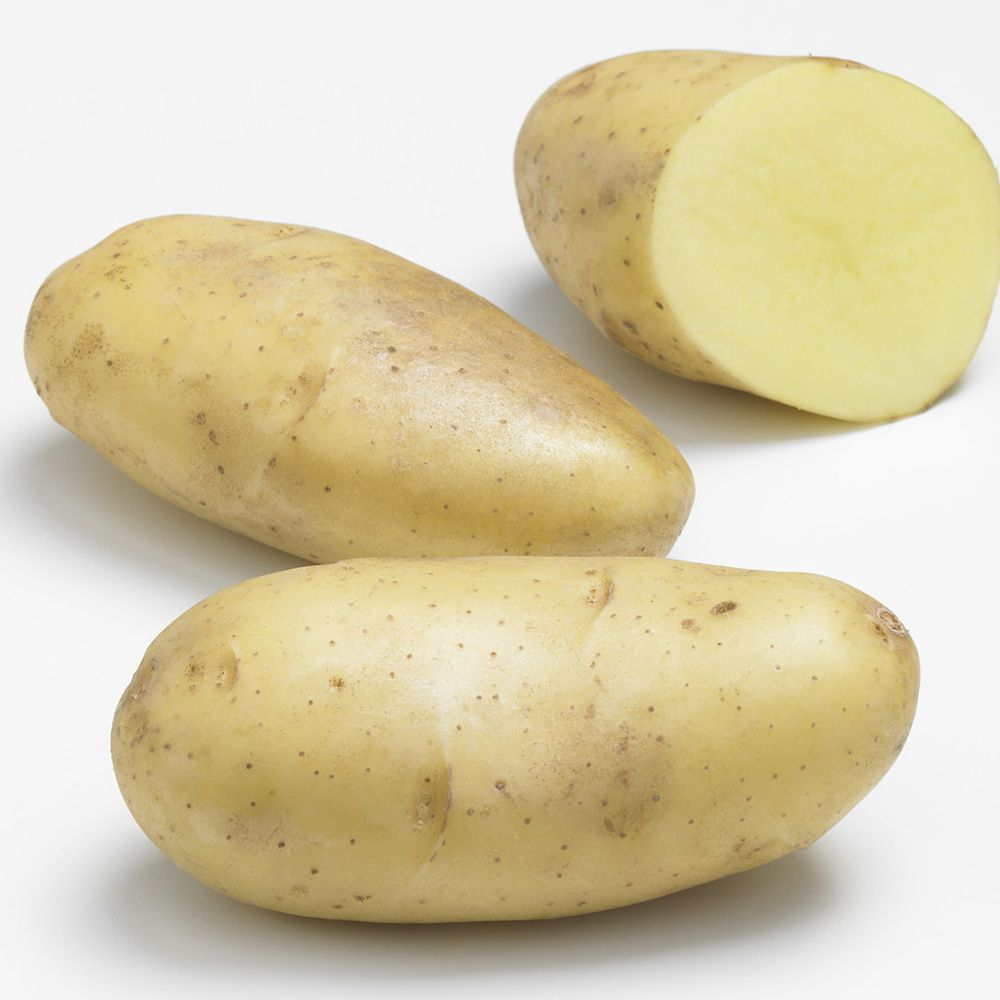

Présentation
La patate, ou pomme de terre, est un tubercule comestible produit par l’espèce Solanum tuberosum, appartenant à la famille des solanacées. Le terme désigne également la plante elle-même, plante herbacée, vivace par ses tubercules mais toujours cultivée comme une culture annuelle. La pomme de terre est une plante qui réussit dans la plupart des sols, mais elle préfère les sols légers légèrement acides. La plante est sujette aux maladies dans des sols calcaires ou manquant d’humus.
La pomme de terre est originaire de la cordillère des Andes (Pérou), dans le sud-ouest de l’Amérique du Sud où son utilisation remonte à environ 8 000 ans. Introduite en Europe vers la fin du XVIe siècle à la suite de la découverte de l’Amérique par les conquistadors espagnols, elle s’est rapidement diffusée dans le monde et est en 2015 cultivée dans plus de 150 pays sous pratiquement toutes les latitudes habitées.
En fonction de son mode de cuisson, elle est une source importante de glucides, qui se présentent principalement sous forme de fécule, et selon son mode de cuisson elle peut apporter des quantités notables de protéines et de vitamines. Ses qualités nutritives et sa facilité de culture font qu’elle est devenue l’un des aliments de base de l’humanité : elle figure parmi les légumes et féculents les plus consommés et est la principale denrée alimentaire non céréalière du monde. Cultivée et consommée localement, relativement peu commercialisée sur le marché mondial, elle est recommandée par l’ONU pour atteindre la sécurité alimentaire.
C’est aussi la culture alimentaire la plus productive, produisant plus de matière sèche à l’hectare que les céréales ; 85 % de la matière sèche produite par la plante est comestible pour l’homme contre environ 50 % pour les céréales.